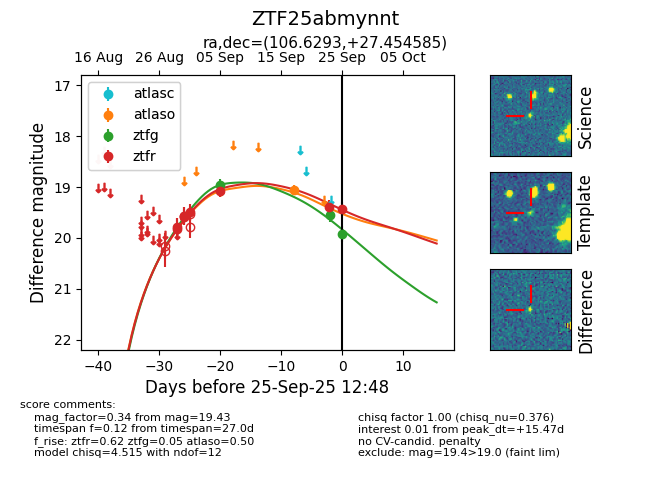
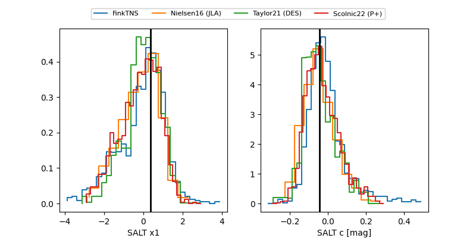

FINK: ZTF25abmynnt
Lasair: ZTF25abmynnt
ALeRCE: ZTF25abmynnt
ZTF25abmynnt (ztf,fink)
equatorial (ra, dec) = (106.6293,+27.45459)
galactic (l, b) = (189.5020,+15.19794)


last atlaso=19.06, ztfg=19.92, ztfr=19.43
1 atlaso, 3 ztfg, 9 ztfr detections